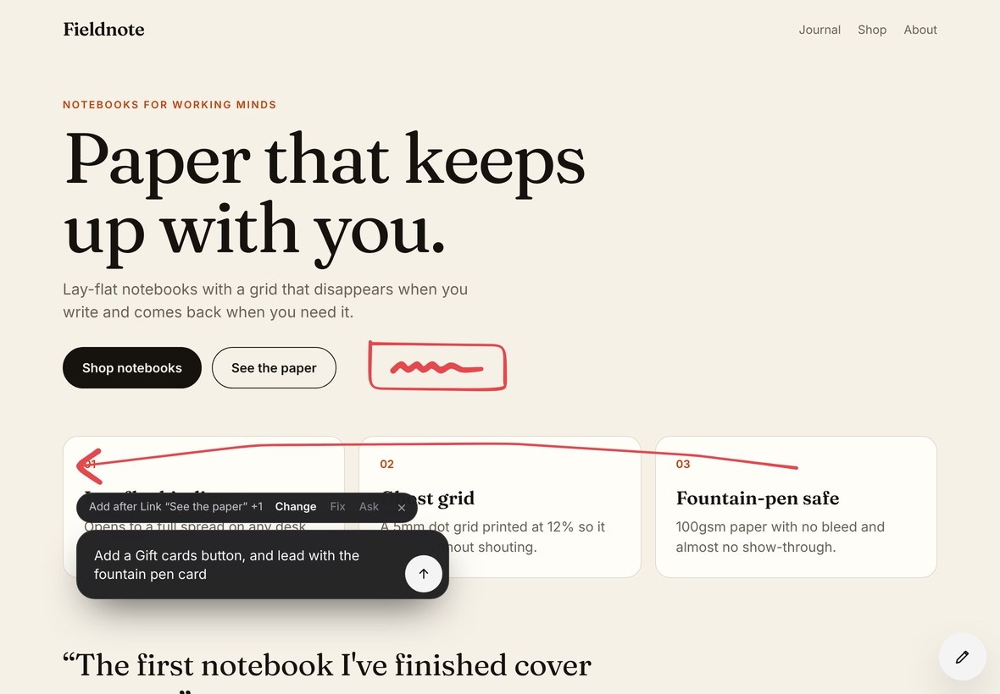

An idea from Really Good Work
Sometimes it’s easier to point than to explain.
Pencil Agent is an experiment. Draw on a live website with an Apple Pencil or your finger, say what you want, and Claude Code makes the change on your Mac.
I didn’t want to open the laptop.
I look at most of my work on an iPad or my phone, the way people will actually see it. That’s where I notice things. A button that’s the wrong orange. A headline that runs too long.
The fix is usually small. But making it meant opening the laptop, finding the file and writing out what I meant. By then the moment was gone.
And typing isn’t always the best way to say it. Sometimes I want to point and say, “No, this. This exact thing.”
Point at it. Say it. Keep going.
- 01Tap the pen button in the corner. Then circle the thing, with an Apple Pencil or a finger.
- 02Stop drawing for a second. A note opens with the keyboard up. Type or dictate what you want. “Make this our brand orange.”
- 03Send. Your Mac gets the note, with the element and the file it lives in. The pen turns off so you can scroll again.
- 04Claude Code makes the change. The page reloads and the marker turns green.
You don’t have to wait. Mark the next thing while Claude works on the last one. Every note stays on the page as a numbered marker, and its colour tells you where it’s at.
Or hold them. Turn on Queue in the note and each one waits on the page instead of going straight to Claude. When you’ve marked everything, tap Send and they all go at once.
When a note is done, its marker shows Claude’s answer. Tap it and drag between before and after. If it’s not right, reply on the note and it goes back.
More than circles.
If you’ve ever marked up a print, you already know how this works. An arrow means move it. A box means put something here. A cross means get rid of it.
Before you send, it tells you how it read your marks. If it got it wrong, draw it again.

A · What you draw B · What the agent receives
B · What the agent receivesA small server does the handoff.
It’s one Node file with no dependencies. It holds your notes and hands them to an agent, which works in your project the same way it does when you’re at your desk. There are two ways to run it.
This is everything the agent gets for one note:
[ann_c6j7hqC0Cmk] fix: Make this our brand orange page: / element: main > a.btn.btn-primary "Shop notebooks" source: src/components/PrimaryButton.tsx:12 classes: btn btn-primary image: /tmp/pencil-sketches-…/9f2a….png (720×440), pin at (156, 220): crop around that point. Optional: open it only if the text isn't enough. seen: /tmp/pencil-sketches-…/955c….html (sha256 3b1f0c9a27de): the element's HTML as the user saw it. If the source has moved on, change what they saw.
About 100 tokens. The last two lines point to a picture of what you marked and the element’s HTML as you saw it. The agent only opens them if it needs to, and it changes the version you were looking at. Nothing runs until you send.
Only you can reach it.
A web page that can ask an agent to edit your code needs to be locked down. So it is.
No Tailscale? On Wi-Fi you trust, run it with HOST=0.0.0.0 and your Mac’s local address. You lose the mic, and it only works at home.
Run the demo.
git clone https://github.com/reallygoodwork/pencil cd pencil npm run demo # open localhost:5173, tap the pen npm run demo -- --lan # scan the QR code on your phone or iPad npm run demo -- --relay --lan # Claude Code opens here and takes the notes
You need a Mac with Node 20 and Claude Code signed in. The demo runs a sample site with Pencil already in it. It edits a copy, so nothing of yours is touched.
- 01Run
npm run demo -- --lanand scan the QR code with your phone or iPad. Same Wi-Fi. - 02Tap the pen, circle a headline, and ask for something. “Shorter.”
- 03Watch the marker go amber, then blue, then green. The headline changes on your screen.
Want it faster? Add --relay. Press Enter and Claude Code opens in the same terminal, already listening, so there’s no startup for each note. Quit it to stop the demo.
About ten minutes.
On your own project, your iPad needs a private way to reach your Mac. I use Tailscale. It’s free, and it gives Safari the HTTPS it needs for the mic.
- 01Install Tailscale on your Mac and your iPad. Share two ports: your app’s dev server and Pencil.
- 02Copy
pencil.env.exampletopencil.envand fill in three lines: where your app is, where Pencil is, and the one folder Claude may edit. - 03Run
npm start. - 04Add Pencil to your app in development only. Vite and Next.js take a few lines. Anything else gets a script tag from
npm run tag, or a bookmarklet if you don’t want to touch the code. - 05Open your app on the iPad and draw.
tailscale serve --bg --https=443 http://localhost:5173 # your app tailscale serve --bg --https=8443 http://127.0.0.1:4545 # pencil cp pencil.env.example pencil.env # APP_ORIGIN, PUBLIC_URL, PROJECT_DIR npm start
Already have Claude Code open in the project? Run npm run relay instead, then /pencil-relay in that session. It takes the notes with everything it already knows. The README has the details for each framework. Read the setup
Short answers.
What is Pencil Agent?
An experiment, and an open-source tool. You circle part of a live site on an iPad or phone, say what should change, and Claude Code edits the code on your Mac.
What do I need?
A Mac with Node 20.6 or newer, Claude Code signed in, your app’s dev server, and an iPad or iPhone. Tailscale, which is free, connects them from any network.
What does it cost?
Nothing. It’s MIT licensed. Claude Code uses your own Claude plan, the same as at your desk. Voice is free too: the keyboard’s dictation key, or whisper.cpp on your Mac.
How does it know what I circled?
It asks the browser what’s under your circle and picks the element the circle mostly covers. Circle a button, you get the button. Circle a card, you get the card.
Can I send several notes at once?
Yes. Turn on Queue in the note, mark everything you want, then tap Send in the tray. They go to the agent together.
Does it only work with Claude?
Claude Code is the default. Set AGENT=codex and the server runs Codex instead. In relay mode, any agent that can run a shell command can take the notes.
Where does my stuff go?
Your notes, sketches and voice stay on your Mac. Claude Code talks to Anthropic while it works, under your login, like it always does.
Why Tailscale?
It connects your iPad to your Mac without opening anything to the internet. It also gives the Mac the HTTPS certificate Safari needs before it’ll use the mic.
Does it work on a phone?
Yes. Tap the pen, draw with one finger and scroll with two. On an iPad, tap the pen and the Pencil draws while your fingers scroll. The pen turns off after each note.
Which frameworks does it work with?
Anything your dev server runs. It’s one script tag, added in development only. In React it also finds the component and the source file.